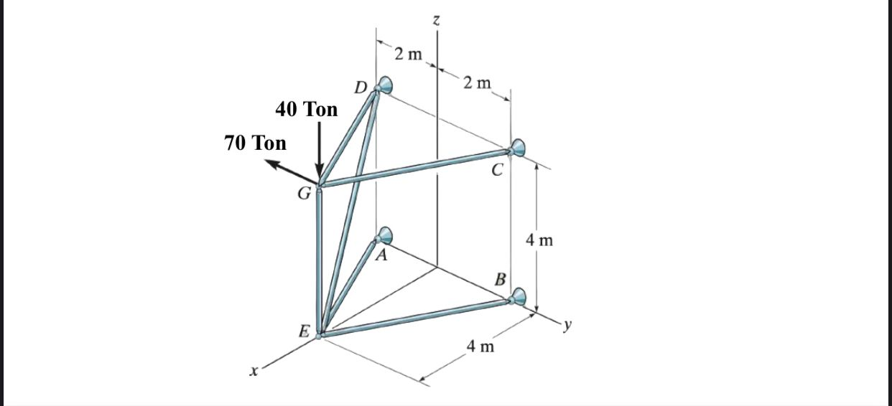

Node Coordinates
ກຳນົດຕຳແໜ່ງ x, y, z ຂອງທຸກ Node.
CIVIL ENGINEERING · STRUCTURAL ANALYSIS
ການວິເຄາະໂຄງຂໍ້ໝຸນ 3 ມິຕິ ໂດຍໃຊ້ Global Stiffness Matrix ແລະ Python
ແຮງ = Stiffness × Displacement
ນີ້ແມ່ນຫົວໃຈຂອງ Direct Stiffness Method
01 · PROBLEM
ໂຄງ Truss 3 ມິຕິ ປະກອບດ້ວຍຈຸດ A–G ແລະຮັບແຮງທີ່ຈຸດ G.

ORIGINAL ASSIGNMENT02 · WORKFLOW
Code ທີ່ໃຊ້ບໍ່ໄດ້ສຸ່ມຄຳນວນ — ມັນເຮັດຕາມຫຼັກ Direct Stiffness Method ຢ່າງເປັນລຳດັບ.
ກຳນົດຕຳແໜ່ງ x, y, z ຂອງທຸກ Node.
ກຳນົດວ່າ Node ໃດເຊື່ອມກັບ Node ໃດ.
ກຳນົດ Modulus of Elasticity E ແລະ Area A.
1 Node ມີ 3 DOF: uₓ, uᵧ, u_z.
ສ້າງ 6×6 stiffness matrix ຂອງແຕ່ລະ Member.
ລວມ element matrices ເຂົ້າ Global Matrix [K].
ສ້າງ {F} ແລະໃສ່ Loads ທີ່ Node G.
Lock DOF ຂອງ Supports A, B, C, D.
ແກ້ [Kff]{Df}={Ff} ເພື່ອຫາ Displacement.
ໃຊ້ Displacement ໄປຫາ axial force ຂອງແຕ່ລະ Member.
ສະແດງ Displacement ແລະ Tension/Compression.
03 · FORMULAS
ແຕ່ລະຈຸດເກັບເປັນ Vector 3 ມິຕິ:
ຕົວຢ່າງ G = [4, 0, 4]. ຄ່ານີ້ໃຊ້ເພື່ອຫາຄວາມຍາວ ແລະທິດທາງຂອງ Member.
ຫາ Vector ຈາກ Node 1 ໄປ Node 2 ແລ້ວຫາຂະໜາດຂອງ Vector ນັ້ນ.
l, m, n ບອກວ່າ Member ເອຽງໄປຕາມແກນ x, y, z ຫຼາຍປານໃດ.
ສະມາຊິກ 1 ອັນມີ 2 Nodes × 3 DOF = 6 DOF.
E = Modulus of Elasticity, A = ພື້ນທີ່ໜ້າຕັດ, L = ຄວາມຍາວ Member. ຖ້າ EA ໃຫຍ່ ສະມາຊິກຈະແຂງກວ່າ.
ບໍ່ແມ່ນບວກ Matrix ຕົງໆທັງໝົດ. Code ໃຊ້ DOF mapping ເພື່ອນຳຄ່າຂອງ element ໄປວາງໃນຕຳແໜ່ງທີ່ຖືກໃນ Global Matrix.
{F} = nodal force vector, [K] = global stiffness matrix, {D} = nodal displacement vector.
f = free DOF. Fixed DOF ຂອງ A, B, C, D ມີ displacement = 0, ຈຶ່ງເຫຼືອສະເພາະສ່ວນທີ່ຕ້ອງແກ້.
ນຳ displacement 6 DOF ຂອງ 2 Nodes ທີ່ປາຍ Member ມາ project ໃສ່ແນວແກນຂອງ Member.
04 · PYTHON WALKTHROUGH
ເວລາ Present ບໍ່ຈຳເປັນອະທິບາຍ Syntax Python ທຸກຕົວ. ໃຫ້ອະທິບາຍວ່າແຕ່ລະ Block ກຳລັງເຮັດຫຍັງທາງ Structural Analysis.
nodes = {
'E': np.array([4,0,0]),
'G': np.array([4,0,4]),
'B': np.array([0,-2,0]),
'C': np.array([0,-2,4]),
'A': np.array([0,2,0]),
'D': np.array([0,2,4])
}ສ້າງ Coordinate ຂອງທຸກ Node ໃນຮູບ [x, y, z]. ນີ້ແມ່ນ Geometry input.
members = [
('G','E'), ('G','C'), ('G','D'),
('E','B'), ('E','A'), ('E','D')
]ແຕ່ລະ tuple ແມ່ນ 1 Member. ຕົວຢ່າງ ('G','E') ໝາຍເຖິງ Member GE.
E_mod = 1.0
A = 1.0ກຳນົດ E ແລະ A. ໃນ code ນີ້ໃຊ້ 1.0 ເພື່ອສາທິດແບບ normalized; ຖ້າຫາ displacement ຈິງ ຕ້ອງໃສ່ E ແລະ A ຕາມຫົວໜ່ວຍຈິງ.
dof_map = {n: [3*i, 3*i+1, 3*i+2]
for i,n in enumerate(node_list)}
ndof = 3 * len(nodes)3D Truss 1 Node ມີ 3 translational DOF. 6 Nodes ⇒ 18 DOF.
L_vec = x2 - x1
L = np.linalg.norm(L_vec)
l, m, n = L_vec / L
k = (E_mod*A/L) * np.array([...])ຫາ Member vector, length, direction cosines ແລະສ້າງ 6×6 stiffness matrix.
for (n1, n2) in members:
k = element_stiffness(n1, n2)
dofs = dof_map[n1] + dof_map[n2]
...
K[dofs[i], dofs[j]] += k[i,j]ວາງ stiffness ຂອງແຕ່ລະ member ເຂົ້າຕຳແໜ່ງຂອງ Global [K].
F = np.zeros(ndof)
F[dof_map['G'][1]] = -70
F[dof_map['G'][2]] = -40ສ້າງ vector ແຮງຂະໜາດ 18 ແລ້ວໃສ່ load ທີ່ DOF y ແລະ z ຂອງ Node G.
fixed_nodes = ['A','B','C','D']
fixed_dofs = []
for n in fixed_nodes:
fixed_dofs += dof_map[n]Node A, B, C, D ຖືກມອງເປັນ supports ແລະ lock 3 DOF ຕໍ່ Node.
K_ff = K[np.ix_(free_dofs, free_dofs)]
F_ff = F[free_dofs]
D_free = np.linalg.solve(K_ff, F_ff)ເລືອກສະເພາະ free DOF ແລ້ວແກ້ linear equations ເພື່ອຫາ displacement.
T = np.array([-l,-m,-n,l,m,n])
q = (E_mod*A/L) * np.dot(T, u)Project nodal displacement ເຂົ້າແນວ Member ແລ້ວຄູນ EA/L ເພື່ອຫາ axial force.
typ = "Tension" if f > 0 else "Compression"
print(f"{m}: {f:.2f} ({typ})")ຖ້າ q ເປັນບວກ ລາຍງານ Tension; ຖ້າເປັນລົບ ລາຍງານ Compression.
05 · HOW TO PRESENT
“ໂຈດນີ້ແມ່ນ 3D Truss. ຂ້ອຍໃຊ້ Direct Stiffness Method. ກ່ອນອື່ນຂ້ອຍກຳນົດພິກັດ Node ແລະ connectivity ຂອງ Members. ຫຼັງຈາກນັ້ນຂ້ອຍຫາ length ແລະ direction cosines l, m, n ເພື່ອສ້າງ element stiffness matrix. ຈາກນັ້ນລວມທຸກ element ເປັນ global stiffness matrix [K]. ຂ້ອຍໃສ່ load ທີ່ G, ກຳນົດ supports A, B, C, D, ແລ້ວແກ້ [Kff]{Df}={Ff}. ສຸດທ້າຍໃຊ້ displacement ທີ່ໄດ້ໄປຄຳນວນ axial force ຂອງແຕ່ລະ member ແລະຈັດປະເພດເປັນ Tension ຫຼື Compression.”
CONCLUSION
ຖ້າເຂົ້າໃຈ 5 ຄຳນີ້ ກໍສາມາດອະທິບາຍ Code ຊຸດນີ້ໄດ້ທັງໝົດ.
ກັບໄປດ້ານເທິງ ↑